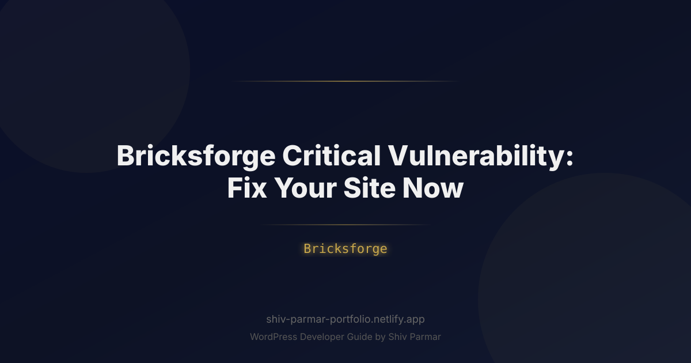

Bricksforge Critical Vulnerability: Fix Your Site Now
Table of Contents
If your WordPress site relies on the Bricks Builder ecosystem, you need to act immediately. Security researchers have disclosed an unauthenticated remote code execution (RCE) flaw classified as a critical vulnerability in the popular Bricksforge plugin. This exploit path centers around an insecure file upload mechanism within the plugin's frontend processing endpoints, allowing unauthenticated threat actors to execute arbitrary code on vulnerable servers in a matter of seconds.
Bricksforge—designed to extend the capabilities of the Bricks visual site builder with animations, custom elements, and dynamic forms—is deployed on tens of thousands of high-performance websites worldwide. Because Bricks and Bricksforge are favored by professional agencies, developers, and enterprise projects seeking lightweight alternatives to legacy page builders, this vulnerability exposes high-value web properties to full infrastructure takeovers, persistent webshell deployment, and catastrophic database theft.
Automated exploit scripts are already traversing IPv4 ranges scanning for vulnerable endpoints. If your production, staging, or client websites run an unpatched version of Bricksforge, assume you are either actively under attack or already compromised. This comprehensive guide breaks down the technical anatomy of this exploit, explains why immediate mitigation is critical, and provides an end-to-end incident response blueprint to lock down and clean your web infrastructure.
What is the Bricksforge Critical Vulnerability?
The Bricksforge critical vulnerability is an unauthenticated arbitrary file upload flaw that can lead directly to remote code execution (RCE). In the Common Vulnerability Scoring System (CVSS v3.1), this class of flaw consistently earns an alarming severity rating of 9.8 out of 10.0 (Critical) due to its zero-privilege requirement, low attack complexity, and total impact on confidentiality, integrity, and availability.
To understand the mechanics of the exploit, you must look at how Bricksforge processes dynamic client-side interactions. The plugin registers several custom AJAX and REST API endpoints designed to handle dynamic form submissions, nested UI elements, and interactive frontend file uploads. Under normal operational parameters, these handlers are meant to validate incoming user requests, ensure nonces match valid sessions, inspect file types against a strict whitelist, and safely sanitize payloads prior to processing.
However, the vulnerable version contained a logic breakdown in the validation sequence of its frontend file upload handler:
- Missing Authentication and Nonce Verification: The endpoint accepted incoming POST requests containing multipart form-data without strictly verifying WordPress security nonces (
check_ajax_referer) or enforcing user capability checks (current_user_can). - Inadequate File Type Validation: While client-side JavaScript enforced superficial file extension limits (such as restricting uploads to
.jpg,.png, or.pdf), the server-side controller failed to thoroughly inspect MIME types via deep packet inspection or strictly restrict executable extensions (such as.php,.phtml,.php7, or double extensions like.php.png). - Predictable Storage Paths: Once processed, the uploaded files were deposited directly into public-facing directories—typically within the
/wp-content/uploads/hierarchy—without randomized naming hashes or execution prevention flags.
By constructing a custom HTTP POST request targeting the exposed endpoint, an unauthenticated attacker can upload a disguised PHP script (such as an obfuscated web shell like Weevely, c99, or a custom one-line backdoor). Once the script resides on the host filesystem, the attacker simply requests the file via their browser or an automated curl command, executing arbitrary PHP code within the security context of the web server (e.g., www-data, nginx, or the pool user in PHP-FPM).
| Attribute | Vulnerability Details |
|---|---|
| Vulnerability Type | Unauthenticated Arbitrary File Upload to RCE |
| CVSS Score | 9.8 (Critical) |
| Authentication Required | None (Unauthenticated) |
| Exploitation Vector | Network / Remote HTTP Request |
| Core Impact | Complete Server Takeover, Data Exfiltration, Privilege Escalation |
Why Securing Bricksforge Matters in 2026
In 2026, the WordPress attack surface has evolved radically. The era of manual defacements and hobbyist script kiddies has been superseded by automated, AI-driven threat networks that monitor the WordPress plugin repository, GitHub changelogs, and vulnerability databases 24 hours a day, 7 days a week. When a high-impact vulnerability drops, the time window between public disclosure and mass exploitation is no longer measured in weeks—it is measured in hours or minutes.
Several unique structural factors make an arbitrary file upload flaw in modern web architectures uniquely dangerous today:
Automated Exploit Fleets and AI Weaponization
Modern malicious botnets utilize LLM-assisted code crawlers to instantly analyze vendor patches (patch diffing). By comparing the vulnerable version of Bricksforge with the newly patched release, threat actors rapidly isolate the exact lines of code modified in the file upload sanitization logic. Once the delta is known, autonomous attack scripts query shodan.io, Censys, and public DNS records to identify web servers running the Bricks theme and Bricksforge plugin, blasting payloads across the web before system administrators can run scheduled weekend maintenance.
Cloud and Microservice Lateral Movement
Modern WordPress sites rarely run as isolated monolithic instances on bare metal. In 2026, websites are frequently tied into containerized clusters (Docker, Kubernetes), serverless databases, cloud object storage (AWS S3, Google Cloud Storage, Cloudflare R2), and internal corporate networks via API tokens. A web shell planted via an insecure file upload gives an adversary arbitrary code execution inside your container or operating system. From there, they can extract wp-config.php credentials, read environment variables, capture AWS IAM roles, and pivot deeper into your private enterprise infrastructure.
Devastating SEO and Brand Reputational Damage
Search engines and browser security consortia enforce zero-tolerance policies for compromised domains. When an unauthenticated file upload leads to a webshell, attackers commonly use the site to host spam rings, phishing landing pages, or drive-by malware downloads. If Google Safe Browsing flags your domain, search engine algorithms immediately purge your rankings, replacing your snippet with a prominent "This site may be hacked" or "Deceptive site ahead" warning. Reversing this blacklisting and rebuilding domain authority often takes months of manual review requests and thousands of dollars in lost organic traffic.
Step-by-Step Guide: How to Fix and Secure Your Site
If you host sites utilizing Bricksforge, treat this incident with maximum priority. Follow this systematic incident response process to determine your exposure, patch the vulnerable components, purge potential malware, and bulletproof your server configuration.
1. Immediate Triage and WAF Virtual Patching
Before modifying core code, block incoming exploit payloads at the network edge to prevent an attack while you execute repairs. If your site is fronted by a Web Application Firewall (WAF) such as Cloudflare, Fastly, or AWS WAF, implement a temporary firewall rule blocking suspicious POST requests targeting upload endpoints.
For Cloudflare users, navigate to Security > WAF > Custom Rules and create a rule to block or challenge direct execution inside upload paths or restrict suspicious multipart requests:
# Cloudflare WAF Expression Rule Example
(http.request.uri.path contains "/wp-content/uploads/" and http.request.uri.path matches "\.(php|phtml|php5|phar|py|sh)$")
or
(http.request.method eq "POST" and http.request.uri.path contains "bricksforge" and not http.request.referer contains "yourdomain.com")Set the action for this rule to Block. This instantly blunts scripted sweeps attempting to probe your media directories for planted web shells.
2. Updating Bricksforge to the Latest Secure Release
The definitive resolution to the vulnerability is updating the Bricksforge plugin to the newest version released by the development team, in which file upload validation, nonce controls, and extension sanitization have been refactored.
Do not simply click "Update" blindly without following proper DevOps safety protocols:
- Generate an immediate full backup: Use your hosting control panel or tools like WP-CLI to snapshot both the database and the full webroot before touching any plugin files.
- Stage the update if possible: If running an enterprise site, pull your live environment to a staging branch, verify that your Bricksforge components and dynamic forms render without console errors or fatal PHP warnings, and push the patch to production.
- Update via WP-CLI: If you manage multiple sites or your WordPress dashboard is slow/inaccessible, execute the update cleanly over SSH:
# Check the current version of Bricksforge
wp plugin list --name=bricksforge
# Update Bricksforge directly to the latest secure release
wp plugin update bricksforge
# Clear all persistent object caches and transients
wp cache flush
wp transient delete --all3. Scanning the Filesystem for Webshells and IoCs
Updating the plugin only patches the front door; it does not eliminate malware if an attacker already successfully exploited the vulnerability prior to your update. You must comb through your server's filesystem for indicators of compromise (IoCs).
Connect to your server via SSH and execute the following investigative terminal commands. Look closely at your uploads directory—there should never be an executable PHP file inside this folder under normal WordPress operation:
# Navigate to your WordPress webroot
cd /var/www/html
# Search for any PHP scripts located inside the uploads directory
find wp-content/uploads/ -type f -name "*.php*" -ls
# Search for recently modified files across the last 7 days
find wp-content/ -type f -mtime -7 -name "*.php"
# Scan for common malicious functions and webshell patterns in uploads
grep -rnE "(eval\(|base64_decode\(|gzinflate\(|assert\(|passthru\(|shell_exec\()" wp-content/uploads/If any of these commands return file paths (e.g., wp-content/uploads/2026/03/cache.php or .../bf_upload_temp_x9a8.php), quarantine those files immediately outside the webroot for forensic analysis and assume the installation was breached.
4. Inspecting the Database for Rogue Administrators
Attackers who gain RCE via a file upload almost always prioritize persistence. They do this by inserting a hidden administrative account directly into the WordPress database or modifying existing user capability arrays.
Run these WP-CLI queries to identify any rogue administrative accounts created recently:
# List all users with Administrator privileges
wp user list --role=administrator
# Check for unauthorized users created in the past 14 days
wp db query "SELECT ID, user_login, user_email, user_registered FROM wp_users ORDER BY user_registered DESC LIMIT 10;"
# Check the user meta capabilities table for anomalous admin permissions
wp db query "SELECT user_id, meta_key, meta_value FROM wp_usermeta WHERE meta_key = 'wp_user_level' AND meta_value = '10';"If you encounter unauthorized users, remove them instantly via WP-CLI using wp user delete [USER_ID] --reassign=[VALID_ADMIN_ID].
5. Hardening Server Directives to Neutralize File Upload Exploits
Even if an attacker finds another zero-day flaw in a plugin that permits an arbitrary file upload, you can neutralize the payload entirely by ensuring that your web server refuses to execute PHP code within upload folders. This is the single most effective server-level defense against this vulnerability class.
For Nginx Web Servers:
Insert a location block inside your primary server directive (usually located in /etc/nginx/sites-available/your-domain.conf) before your standard PHP FastCGI processor block:
# Deny PHP execution in uploads and static directories
location ~* ^/wp-content/uploads/.*\.php$ {
deny all;
access_log off;
log_not_found off;
return 403;
}Reload Nginx to apply the configuration:
sudo nginx -t && sudo systemctl reload nginxFor Apache / LiteSpeed Web Servers:
Create a dedicated .htaccess file located directly inside the /wp-content/uploads/ directory (e.g., /var/www/html/wp-content/uploads/.htaccess) and append the following directives:
# Disable script execution inside uploads directory
<FilesMatch "\.(php|phtml|php3|php4|php5|php7|phps|phar|pl|py|cgi)$">
Order Deny,Allow
Deny from all
</FilesMatch>
# Prevent PHP handler execution
<IfModule mod_php7.c>
php_flag engine off
</IfModule>
<IfModule mod_php.c>
php_flag engine off
</IfModule>6. Invalidate Security Salts and Session Tokens
If there is any suspicion that attackers accessed your environment prior to the patch, assume your active session cookies and database credentials have been compromised. You must invalidate all active sessions immediately.
Open your wp-config.php file and regenerate your authentication keys and salts using the official WordPress API:
# Generate fresh salts directly from the command line
curl -s https://api.wordpress.org/secret-key/1.1/salt/Replace the existing AUTH_KEY, SECURE_AUTH_KEY, LOGGED_IN_KEY, and associated salt blocks in wp-config.php with the newly generated hashes. This immediately invalidates every active cookie across the site, forcing every user (including any malicious actors operating authenticated sessions) to re-authenticate.
| Action Item | Execution Window | Command / Tool |
|---|---|---|
| WAF Mitigation | Immediate (0-15 mins) | Cloudflare Custom Rules / AWS WAF |
| Plugin Update | Within 1 Hour | wp plugin update bricksforge |
| Malware & File Scan | Within 2 Hours | SSH Find/Grep + Wordfence / Maldet |
| Server Hardening | Within 4 Hours | Nginx config / .htaccess script denial |
| Credential Rotation | Same Day | Salt regeneration & DB password reset |
Best Practices for Hardening Bricksforge and WordPress
Remediating a critical vulnerability is reactive; ensuring your infrastructure can withstand future zero-day threats requires a proactive defense-in-depth security posture. Implementing the following architectural controls drastically reduces your risk profile when third-party plugins inevitably suffer future vulnerabilities.
Implement Principle of Least Privilege on Server Files
Ensure that your web server process does not have write access to critical WordPress application files. While the server process needs write permissions for wp-content/uploads/, it should never have write access to core system files or the root plugin directories during normal operation.
# Standardize permissions across your WordPress deployment
find /var/www/html/ -type d -exec chmod 755 {} \;
find /var/www/html/ -type f -exec chmod 644 {} \;
# Restrict wp-config.php strictly to the server owner
chmod 600 /var/www/html/wp-config.phpDisable File Editing within the WordPress Dashboard
Even if an attacker gains unauthorized administrative access via an exploit, preventing them from modifying core code through the WordPress built-in theme and plugin editor limits their ability to implant stealthy backdoors. Add the following directives to your wp-config.php file:
// Disable theme and plugin editing via WP Admin
define( 'DISALLOW_FILE_EDIT', true );
// Prevent unauthorized plugin/theme installation without explicit staging deployments
define( 'DISALLOW_FILE_MODS', true );Enforce Automated File Integrity Monitoring (FIM)
Arbitrary file uploads succeed because administrators are unaware when foreign scripts are injected into deep directory structures. Deploy a File Integrity Monitoring agent such as OSSEC, Tripwire, or a specialized WordPress security agent that monitors the SHA-256 hashes of all filesystem objects. Whenever a file ending in .php is dropped into /wp-content/uploads/, the agent triggers an immediate alert and can automatically quarantine the rogue artifact.
Implement Read-Only Container Filesystems
In modern cloud deployments, run your production WordPress application containers in a read-only state. Configure your containers so that the entire webroot (including /wp-admin/, /wp-includes/, and /wp-content/plugins/) is mounted strictly as read-only. Offload all user-generated media and uploads to an external S3-compatible cloud bucket (e.g., Cloudflare R2, AWS S3) via a plugin like WP Offload Media. When your local disk is immutable, arbitrary file upload exploits fail automatically because the underlying operating system rejects any attempt by PHP to write new files to disk.
Common Mistakes to Avoid
During high-stress security incidents, administrators often make errors that leave their infrastructure vulnerable even after they believe the issue is resolved. Avoid these dangerous pitfalls:
1. Assuming Updating the Plugin Cleans the Intrusion
The single most catastrophic mistake you can make is updating Bricksforge to the patched version and assuming the incident is closed. If an automated bot exploited the vulnerability three hours before you applied the update, the attacker already deposited their web shells, created cron tasks, and added secondary backdoors into unrelated core files. Patching the vulnerability only locks the door that the attacker walked through; it does not kick them out if they are already inside your house. You must perform thorough file and database auditing.
2. Checking Only the WordPress Media Library
Admins often open the WordPress dashboard, click Media > Library, and look for suspicious images. Malicious scripts uploaded via direct HTTP POST requests bypass the WordPress wp_insert_attachment() database registration API entirely. The web shell will exist physically on your disk in wp-content/uploads/ or another plugin folder, but it will never appear in the visual Media Library within WP Admin. You must inspect the physical filesystem over SSH, SFTP, or an advanced server terminal.
3. Relying Solely on Antivirus or Off-the-Shelf Plugins
While plugins like Wordfence or Sucuri provide valuable security layers, modern web shells use advanced polymorphism, dynamic variable naming, and multi-stage decryption routines (such as XOR encoding or base64 nested inside string manipulation) that easily defeat static signature-based detection. A scanner may flag 10 known web shells but miss a custom one-line PHP backdoor such as:
<?php @$_GET['x']($_POST['y']); ?>Manual directory inspection and verification of file execution rules in Nginx/Apache are essential.
4. Forgetting Staging and Development Environments
Security teams often update their primary production domain but leave forgotten staging subdomains (e.g., staging.yourdomain.com, dev.yourdomain.com, or test.yourdomain.com) running outdated code on the very same physical server or shared hosting account. Because these staging sites share the same underlying system resources or database server, a compromise on an unpatched staging site provides attackers with a direct stepping stone into production databases and environmental secrets. Treat every environment that touches your infrastructure with identical security rigor.
5. Ignoring Cron Jobs and Scheduled Events
Once attackers achieve remote code execution, they commonly plant secondary persistent triggers inside WordPress scheduled tasks (WP-Cron) or system crontabs (/etc/crontab, /var/spool/cron/crontabs/). These scheduled jobs periodically download fresh copies of malicious scripts if an administrator deletes the original web shell. Inspect your system cron tasks and review your active WordPress cron schedule via WP-CLI using wp cron event list to ensure no unfamiliar recurring hooks are executing behind the scenes.
Conclusion
This guide covered everything you need to know about Bricksforge Critical Vulnerability: Fix Your Site Now. By following these steps, you can implement these solutions on your WordPress site today.
If you need help with WordPress development, WooCommerce, or performance optimization, feel free to reach out. I work with clients worldwide and deliver high-quality results.

 \n\n
\n\n \n\n
\n\n \n
\n